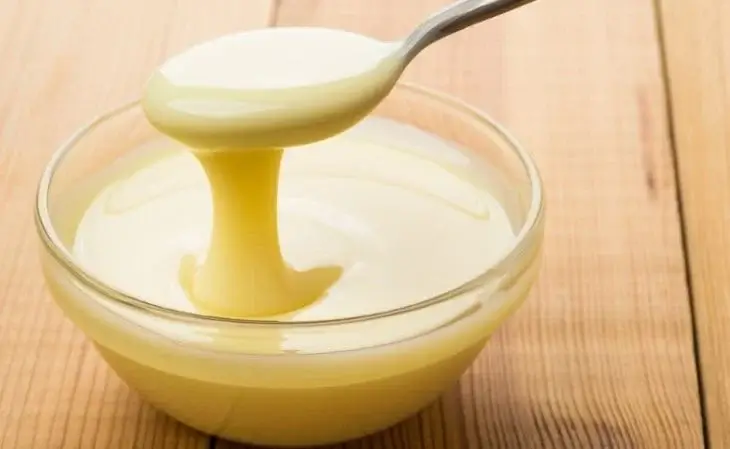

- 500 g de polpa de cupuaçu
- 1 lata de creme de leite
- 1 lata de leite condensado
- 100 ml de água
Creme de Copuaçu
O cupuaçu é uma fruta típica da região de floresta amazônica, e isso inclui o Acre. Na região não é feita apenas creme com essa fruta, mas diversos tipos de doces. Além de bombons, também é comum ver picolés e sorvetes, não só na região Norte, mas em todo o País. Tempo de preparo de 20 minutos e rende até 10 porções.
-
Acrescente todos os ingredientes no liquidificador, mexa um pouco e bata até virar um creme homogêneo.
-
Despeje em uma travessa e leve ao congelador
-
Depois de cerca de 3 horas, sirva.
Modo de Preparo